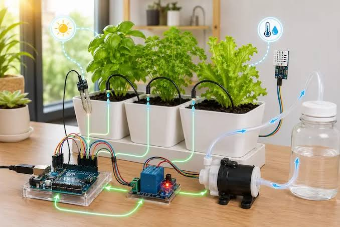
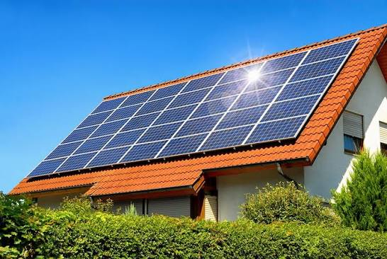

criar uma horta inteligente na escola utilizando sensores de umidade do solo e um sistema de irrigação automática.
unir tecnologia e natureza para criar uma horta mais eficiente e sustentável dentro da escola.

instalar painéis solares na escola para aproveitar a luz do Sol e produzir parte da energia elétrica utilizada no local..
Os painéis solares seriam instalados no telhado ou em uma área adequada, recebendo a luz solar e convertendo-a em energia elétrica. Essa energia poderia alimentar lâmpadas, computadores, ventiladores e outros equipamentos da escola. A quantidade de energia produzida dependeria da incidência solar, do tamanho da instalação e das necessidades da escola.
tornar a escola mais sustentável por meio da utilização de energia solar e incentivar o uso responsável dos recursos naturais.

desenvolver lixeiras inteligentes com sensores para identificar quando estão cheias e compartimentos para separar diferentes tipos de resíduos.
As lixeiras poderiam utilizar sensores para medir o nível de resíduos e indicar quando fosse necessário realizar a coleta. Poderiam também ter divisões identificadas para papel, plástico, metal e outros materiais recicláveis. Em uma versão mais avançada, os sensores poderiam enviar notificações para os responsáveis pela limpeza quando uma lixeira estivesse quase cheia.
Facilita a organização da coleta seletiva. Evita que as lixeiras transbordem. Ajuda a manter salas, corredores e pátios limpos. Incentiva os alunos a separar corretamente os resíduos. Pode tornar a coleta de lixo mais eficiente, evitando verificações desnecessárias.
utilizar a tecnologia para melhorar o descarte de resíduos e incentivar hábitos de reciclagem na escola..